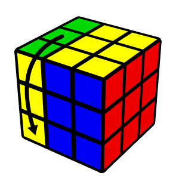
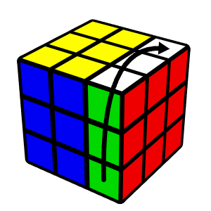

Wiki del Cubo Rubik
Notacion de los Movimientos del Cubo Rubik
Movimientos Basicos
R

L
U

D
F

B

R'

L'

U'

D'

F'

B'

R2

L2

U2

D2
F2
B2
- R: Giro de la cara derecha en sentido horario
- L: Giro de la cara izquierda en sentido horario
- U: Giro de la cara superior en sentido horario
- D: Giro de la cara inferior en sentido horario
- F: Giro de la cara frontal en sentido horario
- B: Giro de la cara trasera en sentido horario
- R': Giro de la cara derecha en sentido antihorario
- L': Giro de la cara izquierda en sentido antihorario
- U': Giro de la cara superior en sentido antihorario
- D': Giro de la cara inferior en sentido antihorario
- F': Giro de la cara frontal en sentido antihorario
- B': Giro de la cara trasera en sentido antihorario
Un número seguido de la letra indica cuántas veces se realiza el movimiento (ejemplo: R2 = dos giros de la cara derecha).
Movimientos Amplios

Rw / r

Lw / l
Uw / u
Dw / d

Fw / f

Bw / b
- Rw / r: Giro amplio de derecha en sentido horario
- Lw / l: Giro amplio de izquierda en sentido horario
- Uw / u: Giro amplio superior en sentido horario
- Dw / d: Giro amplio inferior en sentido horario
- Fw / f: Giro amplio frontal en sentido horario
- Bw / b: Giro amplio trasera en sentido horario
Estos movimientos amplios giran dos capas a la vez. Se pueden escribir de dos maneras minúsculas o terminando en 'w'.
Movimientos Centrales

M

E
S
- M: Sigue la dirección L
- E: Sigue la dirección D
- S: Sigue la dirección F
Los movimientos centrales solo giran la capa intermedia. También existen M' y M2, etc.
Rotaciones del cubo
x
y
z
- x: Sigue la dirección R
- y: Sigue la dirección U
- z: Sigue la dirección F
También existen x' y x2, etc.